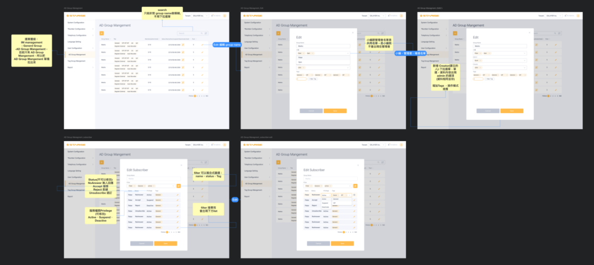

通訊系統-Backend Website
UX Research・UI・Prototype・Coding
專案項目 Project Details
描述 Description－
當公司的設計團隊同時進行多個產品的介面設計時，產品內部與產品之間的「一致性」，往往是重要的考量，因為這不僅影響了使用者操作上的流暢度，也影響了客戶對於公司品牌感受的一致性。易用性，連接性，安全，可擴展性．．．．等。
目標TA－
B2B企業通訊服務。
我的角色 Role－
UI/UX designer，包括 UX Guideline，前端協作者HTML&CSS(SCSS)，bootstrap，定義css component。
遇到問題和挑戰 Problem－
交換機系統資料太龐大和複雜，後台原本的操作流程不美觀也不符合現在服務形式。
目標 Goal－
可視性，良好的操作行為，處理資料關聯性畫面呈現。
我做了哪些改善 Deliverables－
- 用戶研究與內部訪談
- 產品經理提供簡單的功能，釐清整個功能的走向（畫面步驟）與目標
- Sketch（草圖），Wireframes & Mockups
- 延續既有設計，加以設計系統化
- 高保真畫面 Hi-fidelity Mockups
- 可用性測試
- 協助工程師HTML&CSS(SCSS)，bootstrap，套件製作， 畫面系統化，討論效果，共同合作
- 最終畫面展示
使用的軟體 Software－
- Sketch
- Overflow
- invision
- Illustrator
- Html
- CSS(SCSS)
- Bootstrap
- git(Source tree)
過程 Process
了解用戶：
為了更深入地了解用戶，他們的動機和痛點，我進行了內部QA訪談，調查。因此，選擇了QA部門長期在使用我們的交換機做為早期採用者。
改善用戶以下主要痛點：
- 操作上需要教學手冊，適應時間，往往不是很清楚直覺。
- 畫面改善更美觀，友善，操作更清楚直覺。減少訊息傳遞的時間
易用性測試 Test
根據產品路線圖，確保 UX Guideline 內容的完整性，我歸納其主要應包含以下幾點內容:
-
使用動機與目的：
說明此元件在何情況下被使用，以及其主要的功能、資料關連性，結合資料內容帶給使用者良好的體驗。白板上sketch
接收產品經理口頭描述，在筆記本和白板上快速畫出功能性的草圖，跟產品經理確認項目和前後端工程師討論功能的可行性。 -
情境與樣式：
有時一個元件可能針對不同的情境需求，考慮不同營幕尺寸呈現，以不同的功能和樣式來呈現， 搭配UI Guideline參照。
參照原有UI Guideline

使用Bootstrap協助工程CSS&SCSS設定

Desktop
Responsive Web Design
-
行為和流程：
需要較詳細地規範使用者和元件的互動行為，包含如何觸發元件、行為後續流程、特殊狀況、Error warning等。UI Overflow
用sketch畫完完稿後，用overflow 拉出流程圖步驟以及寫上說明功能。
從中學習到什麼？
內部同事與顧客的反饋，幫助我們驗證設計，通過實驗解決當前的問題。
與不同領域的人討論：
- 與PM 討論: 了解整個功能相關的細節和關聯性
- 與工程師討論: 現實面功能實現，是否流程上有盲點，對我有很大的幫助。
- 與ＱＡ討論: 腦力激盪，怎麼在舊有的習慣行為下更優化功能和資料呈現，輕鬆找到所需工具。